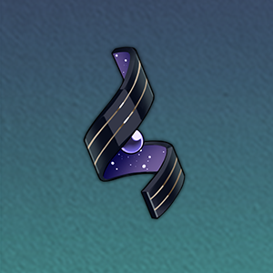
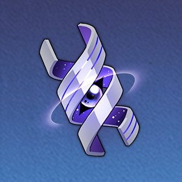

| 突破前 | 突破后 | 突破素材 | |
| 基础生命值 | 126 | - |
-
|
| 基础攻击力 | 87 | - | |
| 基础防御力 | 49 | - |
| 突破前 | 突破后 | 突破素材 | |
| 基础生命值 | 247 | 297 |

掠夺的本能 5
信用点 4000 |
| 基础攻击力 | 169 | 204 | |
| 基础防御力 | 96 | 116 |
| 突破前 | 突破后 | 突破素材 | |
| 基础生命值 | 361 | 411 |
掠夺的本能 10
信用点 8000 |
| 基础攻击力 | 248 | 283 | |
| 基础防御力 | 141 | 160 |
| 突破前 | 突破后 | 突破素材 | |
| 基础生命值 | 475 | 525 |
虚幻铸铁 3

篡改的野心 6
信用点 16000 |
| 基础攻击力 | 326 | 361 | |
| 基础防御力 | 185 | 205 |
| 突破前 | 突破后 | 突破素材 | |
| 基础生命值 | 589 | 639 |
虚幻铸铁 7篡改的野心 9
信用点 40000 |
| 基础攻击力 | 405 | 439 | |
| 基础防御力 | 230 | 249 |
| 突破前 | 突破后 | 突破素材 | |
| 基础生命值 | 703 | 753 |
虚幻铸铁 20践踏的意志 6
信用点 80000 |
| 基础攻击力 | 483 | 518 | |
| 基础防御力 | 274 | 294 |
| 突破前 | 突破后 | 突破素材 | |
| 基础生命值 | 817 | 868 |
虚幻铸铁 35践踏的意志 9
信用点 160000 |
| 基础攻击力 | 561 | 596 | |
| 基础防御力 | 319 | 339 |
| 突破前 | 突破后 | 突破素材 | |
| 基础生命值 | 931 | - |
-
|
| 基础攻击力 | 640 | - | |
| 基础防御力 | 363 | - |